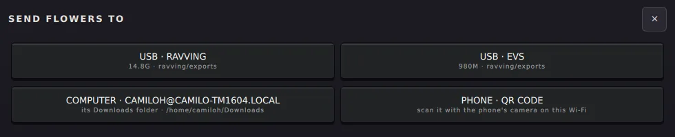
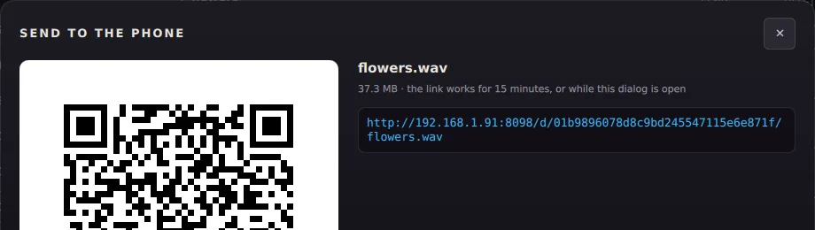

ravving を使う / guide/send-to-phone.md
スマホにファイルを送る
画面の QR コードをスマホのカメラで読めば、ファイルがダウンロードに入ります。アプリもペアリングも不要。
曲、ビデオ、プロジェクトをスマホへ。アプリもペアリングもアカウントも不要で、iPhone を含むどのスマホでも使えます。
始める前に
スマホと MIKO は同じ Wi-Fi につないでください。MIKO がネットワークにつながっていなければ、ダイアログが知らせます。
送る
- MENU を押して FILES をタップします。
- 左で TRACKS や VIDEOS などの種類を選びます。
- ファイルの横の SEND… をタップします。
- PHONE · QR CODE をタップすると、QR コードが表示されます。
- スマホのカメラを向けて、リンクを開きます。

Safari か Chrome がファイルをスマホのダウンロード（iPhone ではファイル）に保存します。
届くのを見る
ダイアログは WAITING FOR THE PHONE、進み具合付きの SENDING、そして DOWNLOADED ✓ と変わります。ファイル全体が届くとメッセージが出ます。

ノート PC で入力したいときのために、リンクは文字でも表示されます。
知っておくと便利
- リンクの有効期間はダイアログを開いている間、最大 15 分です。ダイアログを閉じると終わります。
- 一度に 1 ファイル。複数あるときは最初の 1 つを送り、そう知らせます。
- SEND… はあちこちにあります：FILES、ビデオの後、ミュージックプレーヤー、プリセットと音色のダイアログ。
スマホからすべてを見る
FILES の上部の PHONE · BROWSE で、ライブラリ全体を Web ページとして開く QR コードが表示されます。各ファイルに DOWNLOAD ボタンがあります。